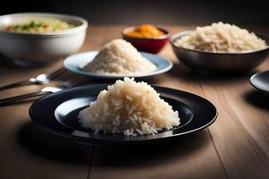

Rice

Rice Recipe
Rice is a versatile and nutritious food, perfect as a base for many meals.
Here's how to prepare simple boiled rice.
Ingredients
- 1 cup of rice
- 2 cups of water
- Salt (optional)
Steps
- Rinse the rice thoroughly under cold water.
- In a saucepan, bring the water to a boil.
- Add the rice (and salt if using), then stir once.
-
Cover the pan, reduce heat to low, and let it simmer for 15–20 minutes.
- Turn off the heat and let the rice sit (covered) for 5 minutes.
- Fluff with a fork and serve.